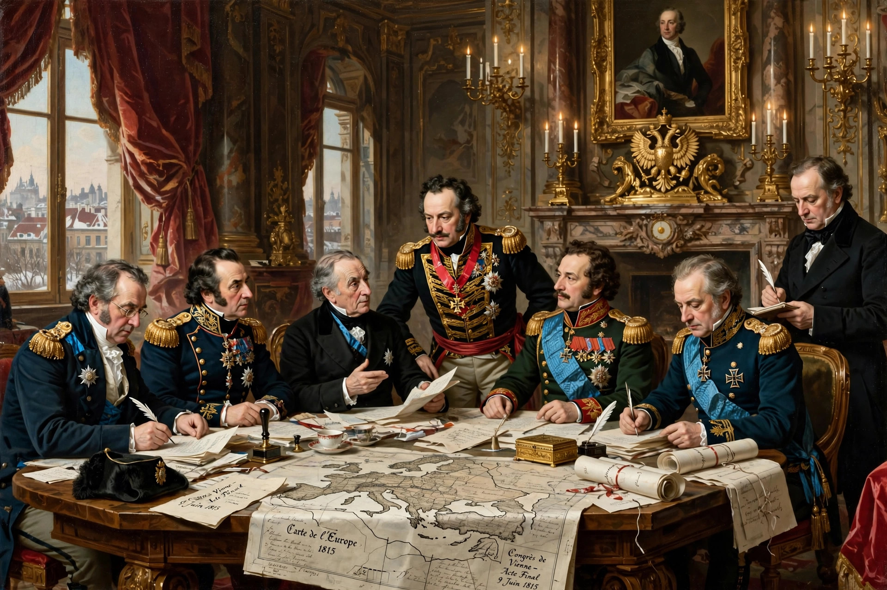

From Wikipedia, the free encyclopedia

The Concert of Europe was a general consensus among the great powers of Europe — the United Kingdom, Austria, Prussia, Russia, and (after 1818) France — to maintain the European balance of power, political boundaries, and spheres of influence established at the Congress of Vienna (1814–15) after the Napoleonic Wars. Operating roughly from 1815 to the outbreak of the First World War in 1914, though most vigorously before the Crimean War, it is credited with an absence of general European war for nearly a century.
The Concert worked through summit diplomacy: congresses at Aix-la-Chapelle (1818), Troppau (1820), Laibach (1821), and Verona (1822) managed crises and, controversially, coordinated intervention against liberal revolutions in Naples and Spain. The guiding figures included Austrian chancellor Klemens von Metternich and British foreign secretary Lord Castlereagh. The system managed the independence of Belgium (1830–39) and Greece, and later great-power crises at Berlin (1878) and over Morocco and the Balkans.
The Crimean War (1853–56), in which Britain and France fought Russia, shattered the Concert's working consensus; the wars of Italian and German unification then redrew the map it existed to freeze. Historians debate whether the Concert was a genuine system of collective security — a precursor to the League of Nations and United Nations — or merely an aristocratic, counter-revolutionary order that suppressed nationalism and liberalism to preserve dynastic states.